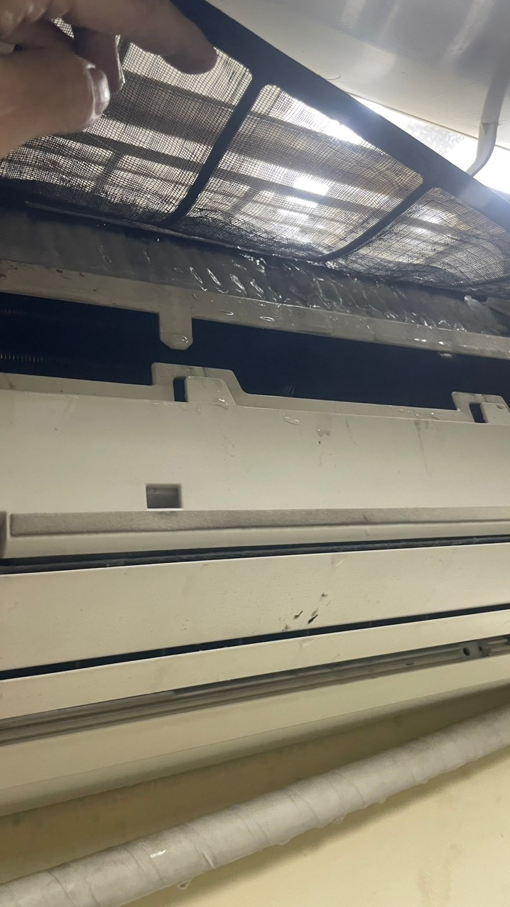

"Máy lạnh - một trợ thủ đáng tin cậy trong những ngày oi ả của mùa hè. Đôi khi, chỉ cần một bấm nút, và không gian xung quanh bạn trở nên mát mẻ và thoải mái. Tuy nhiên, máy lạnh, như bất kỳ thiết bị nào khác, không phải lúc nào cũng hoạt động hoàn hảo. Những sự cố và lỗi có thể xảy ra, gây phiền toái và khó chịu. Trong bài viết này, chúng ta sẽ khám phá 9 lỗi phổ biến của máy lạnh và cách bạn có thể tự sửa chữa chúng. Hãy cùng tìm hiểu để duy trì không gian mát mẻ và thoải mái cho gia đình bạn"
Danh sách 9 Lỗi Phổ Biến của Máy Lạnh và Cách Sửa Chữa Chúng
1.Máy lạnh không hoạt động: Vấn đề không thể bỏ qua
Máy lạnh không bật hoặc không hoạt động chính là một hiện tượng phổ biến và đôi khi rất khó chịu, đặc biệt trong những ngày nhiệt đới. Thông qua hướng dẫn này, chúng tôi sẽ giúp bạn xác định nguyên nhân và cách khắc phục triệt hạ vấn đề này để bạn luôn có không gian mát mẻ và thoải mái. Đầu tiên, hãy kiểm tra các yếu tố sau:
Nguyên nhân:
- Ổ cắm điện không hoạt động: Trong một số trường hợp, máy lạnh có thể không hoạt động do ổ cắm điện không hoạt động. Hãy kiểm tra xem ổ cắm có điện hay không bằng cách kết nối một thiết bị khác vào đó.
- Bộ cắt mạch tự động (MCB) đã nhảy: Nếu MCB đã nhảy, máy lạnh sẽ không hoạt động. Hãy kiểm tra bảng điện của bạn và đảm bảo rằng MCB của máy lạnh không bị nhảy. Nếu đã nhảy, hãy nhấn nút Reset để khôi phục.
- Kết nối sai lệch hoặc không đúng cách: Đôi khi, máy lạnh không hoạt động đơn giản vì nó chưa được kết nối đúng cách. Hãy kiểm tra lại kết nối điện và dây cáp để đảm bảo chúng đúng và an toàn.
Cách khắc phục:
Nếu bạn đã kiểm tra và xác định rằng máy lạnh không hoạt động do một trong các nguyên nhân trên, bạn có thể thử các biện pháp sau:
- Kiểm tra và sửa chữa ổ cắm điện: Nếu ổ cắm không hoạt động, bạn nên gọi thợ điện để sửa chữa hoặc thay thế nó.
- Khôi phục MCB: Nếu MCB đã nhảy, nhấn nút Reset để khôi phục lại nó. Nếu vấn đề này lặp lại thường xuyên, cần kiểm tra hệ thống điện trong ngôi nhà.
- Kiểm tra lại kết nối điện: Đảm bảo rằng máy lạnh được kết nối đúng cách và không có lỏng lẻo hoặc hỏng hóc nào.
Nếu sau những biện pháp trên máy lạnh vẫn không hoạt động, hãy gọi thợ sửa chữa chuyên nghiệp để kiểm tra và sửa lỗi nghiêm trọng hơn. Khắc phục sự cố này sớm giúp bạn tiết kiệm thời gian và tiền bạc, đồng thời đảm bảo môi trường sống của bạn luôn thoải mái và mát mẻ.
2. Không lạnh đủ:
Không có gì khó chịu hơn khi máy lạnh của bạn không thổi đủ không khí lạnh trong những ngày nắng nóng. Để giải quyết vấn đề này và tối ưu hóa hiệu suất làm mát của máy lạnh, hãy xem xét các nguyên nhân và cách khắc phục dưới đây:
Nguyên nhân:
- Lượng Gas Lạnh Giảm: Một trong những nguyên nhân phổ biến là lượng gas lạnh trong máy lạnh đã giảm đi. Điều này có thể xảy ra do rò rỉ hoặc cạn kiệt dần sau nhiều năm sử dụng.
- Lưới Lọc Không Khí Bị Tắc: Lưới lọc không khí bẩn có thể tạo ra một rào cản cho luồng không khí của máy lạnh. Nó có thể cản trở dòng khí lạnh và gây ra sự không đủ lạnh.
Cách Khắc Phục:
- Nạp Lại Gas Lạnh: Nếu máy lạnh của bạn thiếu gas lạnh, bạn cần liên hệ với một chuyên gia để nạp lại gas lạnh và kiểm tra lỗ rò. Điều này sẽ đảm bảo rằng máy lạnh hoạt động hiệu quả hơn.
- Vệ Sinh Lưới Lọc Không Khí: Vệ sinh lưới lọc không khí hàng tháng để ngăn chúng bị tắc. Điều này sẽ tăng hiệu suất làm mát của máy lạnh và giúp bạn có không gian thoải mái hơn.
- Bảo Dưỡng Định Kỳ: Để đảm bảo máy lạnh luôn hoạt động tốt, hãy thực hiện bảo dưỡng định kỳ bởi một chuyên gia. Điều này bao gồm kiểm tra lượng gas lạnh, lưới lọc không khí và các thành phần khác của máy.
Nhớ rằng sự cố không đủ lạnh có thể xuất phát từ nhiều nguyên nhân khác nhau. Nếu sau khi kiểm tra và thực hiện các biện pháp trên mà máy lạnh vẫn không hoạt động hiệu quả, hãy gọi một chuyên gia sửa chữa để xác định và khắc phục vấn đề cụ thể. Việc duy trì máy lạnh trong tình trạng hoạt động tốt không chỉ giúp tiết kiệm năng lượng mà còn làm cho cuộc sống hàng ngày của bạn dễ chịu hơn.
- Máy lạnh đọng nước nhiều:

Máy lạnh đọng nước nhiều
Một máy lạnh đọng nước nhiều có thể gây phiền toái và làm ẩm ướt không gian của bạn. Để hiểu và khắc phục tình trạng này, chúng ta cần xem xét các nguyên nhân cụ thể và biện pháp tối ưu hóa máy lạnh. Dưới đây là các nguyên nhân phổ biến và cách khắc phục:
Nguyên Nhân:
- Ống Dẫn Nước Bị Tắc: Một trong những nguyên nhân chính khiến máy lạnh đọng nước nhiều là ống dẫn nước bị tắc. Điều này có thể xảy ra khi bụi bẩn hoặc cặn bã nhờn tắc nghẽn ống dẫn nước.
- Lắp Đặt Không Đúng Cách: Nếu máy lạnh không được lắp đặt đúng cách, hệ thống thoát nước có thể bị xếp chồng lên nhau hoặc gắn chặt, gây ra sự đọng nước.
- Bộ Lọc Không Khí Bẩn: Lưới lọc không khí bẩn có thể tạo ra rào cản cho luồng không khí và làm cho nước tách ra khỏi không khí.
- Đường Ống Thoát Nước Bị Nghẹt: Đường ống thoát nước bị nghẹt là nguyên nhân khác khiến nước đọng trong máy lạnh thay vì thoát ra ngoài.
- Gas Thiếu: Khi máy lạnh thiếu gas, nó có thể hoạt động không hiệu quả và gây ra đọng nước.
- Máng Nước Hỏng: Máng nước bên trong máy lạnh bị hỏng có thể làm cho nước đọng ra bên ngoài thay vì chảy vào hệ thống thoát nước.
Cách Khắc Phục:
- Vệ Sinh Ống Dẫn Nước: Để khắc phục tắc nghẽn ống dẫn nước, hãy thường xuyên làm sạch nó hoặc gọi một thợ chuyên nghiệp để làm việc này.
- Kiểm Tra Lắp Đặt: Đảm bảo máy lạnh được lắp đặt đúng cách và hệ thống thoát nước không bị cản trở.
- Vệ Sinh Bộ Lọc Không Khí: Vệ sinh lưới lọc không khí hàng tháng để đảm bảo không có bụi bẩn gây cản trở luồng không khí.
- Kiểm Tra Đường Ống Thoát Nước: Kiểm tra xem đường ống thoát nước có bị nghẹt hay không và làm sạch nó nếu cần.
- Kiểm Tra Gas: Nếu máy lạnh đọng nước do thiếu gas, hãy liên hệ với một chuyên gia để nạp lại gas và kiểm tra rò rỉ.
- Sửa Chữa Máng Nước Hỏng: Nếu máng nước bị hỏng, bạn nên gọi thợ sửa chữa để thay thế hoặc sửa chữa nó.
Nhớ rằng việc thường xuyên bảo dưỡng và kiểm tra máy lạnh có thể ngăn ngừa hiện tượng đọng nước nhiều và đảm bảo máy lạnh hoạt động hiệu quả hơn.
4. Tiếng ồn lớn:
Khi máy lạnh tạo ra tiếng ồn lớn, điều này không chỉ làm phiền bạn mà còn có thể là dấu hiệu của các vấn đề tiềm ẩn. Hãy cùng chúng tôi tìm hiểu về nguyên nhân và cách khắc phục các tiếng ồn này, đồng thời tối ưu hóa hiệu suất máy lạnh.
Nguyên Nhân:
- Cánh Quạt Bị Gãy hoặc Bị Dơ Bẩn: Tiếng ồn lớn thường xuất phát từ cánh quạt bị gãy hoặc bị dơ bẩn. Hãy kiểm tra và thay thế cánh quạt nếu cần.
- Rò Rỉ Chất Làm Lạnh: Nếu máy lạnh rò rỉ chất làm lạnh, điều này có thể tạo ra tiếng rít khó chịu.
- Vấn Đề với Rơ Le: Tiếng lách cách khi bật và tắt nguồn máy lạnh có thể là dấu hiệu của sự cố rơ le.
- Quạt Gió hoặc Cụm Động Cơ Gặp Vấn Đề: Tiếng ồn ào, lạch cạch, hoặc đập mạnh có thể là dấu hiệu của vấn đề với quạt gió hoặc cụm động cơ.
- Máy Nén (Block) hoặc Động Cơ Quạt Gây Tiếng Kêu: Máy nén hoặc động cơ quạt bị lỗi có thể tạo ra các tiếng kêu phiền toái.
- Bộ Phận Điện Bị Lỗi: Các bộ phận điện bị lỗi có thể tạo ra âm thanh ồn ào và tiếng ù ù.
Cách Khắc Phục:
- Thay Thế Cánh Quạt: Nếu cánh quạt bị gãy hoặc bị dơ bẩn, hãy thay thế chúng để giảm tiếng ồn.
- Kiểm Tra và Sửa Chữa Rò Rỉ: Nếu có rò rỉ chất làm lạnh, bạn cần gọi thợ sửa chữa để kiểm tra và sửa chữa .
- Kiểm Tra Rơ Le: Nếu tiếng lách cách liên quan đến rơ le, bạn cần gọi một chuyên gia để kiểm tra và thay thế rơ le nếu cần.
- Bảo Dưỡng Quạt Gió và Động Cơ: Vệ sinh và bảo dưỡng định kỳ quạt gió và động cơ để đảm bảo chúng hoạt động trơn tru.
- Kiểm Tra và Sửa Chữa Máy Nén hoặc Động Cơ Quạt: Nếu tiếng kêu liên quan đến máy nén hoặc động cơ quạt, bạn cần gọi thợ sửa chữa chuyên nghiệp để kiểm tra và sửa lỗi.
- Kiểm Tra Bộ Phận Điện: Bộ phận điện bị lỗi cần được kiểm tra và sửa chữa hoặc thay thế bởi một chuyên gia.
Bằng cách thực hiện các biện pháp trên, bạn có thể giảm tiếng ồn từ máy lạnh và đảm bảo sự thoải mái trong ngôi nhà của mình. Đồng thời, việc duy trì máy lạnh trong tình trạng hoạt động tốt cũng có lợi cho năng suất và tiết kiệm năng lượng.
5. Máy lạnh có mùi hôi:
Khi máy lạnh bắt đầu hoạt động sau thời gian nghỉ mùa đông, có thể bạn sẽ cảm nhận một mùi hôi khó chịu. Nguyên nhân chính là dầu và bụi bẩn tích tụ trong hệ thống máy lạnh trong thời gian không hoạt động. Dưới đây là cách khắc phục vấn đề này và đảm bảo không gian mát mẻ và thơm tho trong mùa hè.
Nguyên Nhân:
- Tích Tụ Dầu và Bụi Bẩn: Trong quá trình không hoạt động, máy lạnh có thể tích tụ dầu và bụi bẩn trong các bộ phận bên trong.
Cách Khắc Phục:
- Vệ Sinh Bộ Lọc: Đầu tiên, hãy vệ sinh và thay thế bộ lọc không khí của máy lạnh. Bộ lọc không khí bẩn có thể tạo ra mùi hôi và giảm chất lượng không khí.
- Làm Sạch Hệ Thống: Sử dụng dịch vệ sinh dành riêng cho máy lạnh để làm sạch hệ thống. Bạn có thể tự thực hiện hoặc thuê một chuyên gia để làm việc này. Làm sạch hệ thống sẽ loại bỏ dầu và bụi bẩn tích tụ trong máy lạnh.
- Kiểm Tra Ống Thoát Nước: Đảm bảo ống thoát nước của máy lạnh không bị tắc nghẽn. Nếu ống thoát nước bị tắc, nước có thể tích tụ và gây ra mùi hôi.
- Sử Dụng Khử Mùi: Có thể sử dụng các sản phẩm khử mùi thích hợp để loại bỏ mùi khó chịu trong máy lạnh. Hãy chọn sản phẩm được thiết kế đặc biệt cho máy lạnh và tuân thủ hướng dẫn sử dụng.
- Bảo Dưỡng Định Kỳ: Thực hiện bảo dưỡng định kỳ bởi một chuyên gia máy lạnh. Điều này bao gồm làm sạch hệ thống và kiểm tra các bộ phận để đảm bảo máy lạnh hoạt động tốt và không gây mùi khó chịu.
Bằng cách thực hiện các biện pháp trên, bạn có thể loại bỏ mùi hôi khó chịu từ máy lạnh và đảm bảo rằng nó hoạt động hiệu quả trong mùa hè. Điều này sẽ giúp cải thiện chất lượng không khí và tạo ra môi trường thoải mái trong ngôi nhà của bạn.
6. Rò rỉ gas( xì gas)
Khi chất làm mát (gas) trong máy lạnh bị rò rỉ, nó có thể tạo ra những vấn đề nghiêm trọng cho hoạt động của máy lạnh. Dưới đây là nguyên nhân của rò rỉ gas và cách khắc phục để đảm bảo máy lạnh hoạt động hiệu quả và tiết kiệm năng lượng.
Nguyên Nhân:
- Sự Mài Mòn và Tuổi Thọ: Thời gian và sự mài mòn dần dần có thể gây ra rò rỉ gas. Các bộ phận bên trong máy lạnh có thể bị hỏng hoặc tuổi thọ giảm.
- Sự Cố Kỹ Thuật: Sự cố trong quá trình lắp đặt hoặc bảo trì máy lạnh có thể làm hỏng kín khít hệ thống gas và tạo ra lỗ rò rỉ.
Cách Khắc Phục:
- Liên Hệ Chuyên Gia: Nếu bạn nghi ngờ máy lạnh của bạn có rò rỉ gas, hãy ngay lập tức liên hệ với một chuyên gia máy lạnh. Họ sẽ thực hiện kiểm tra và xác định vị trí rò rỉ.
- Sửa Chữa Rò Rỉ: Sau khi xác định vị trí rò rỉ, chuyên gia sẽ sửa chữa hoặc thay thế các bộ phận bị hỏng. Điều này có thể bao gồm việc hàn hoặc thay ống dẫn gas.
- Bảo Dưỡng Định Kỳ: Thực hiện bảo dưỡng định kỳ bởi một chuyên gia máy lạnh. Bảo dưỡng định kỳ có thể giúp phát hiện và khắc phục vấn đề rò rỉ gas sớm, tránh hỏng hóc nghiêm trọng.
- Sử Dụng Chất Làm Mát Hợp Lệ: Đảm bảo rằng chất làm mát được sử dụng là chất phù hợp và không gây hại cho hệ thống gas.
Rò rỉ gas không chỉ làm giảm hiệu quả làm lạnh của máy lạnh mà còn tiêu thụ nhiều năng lượng hơn và có thể gây hỏng các bộ phận quan trọng. Việc duy trì và bảo trì định kỳ máy lạnh sẽ giúp bạn tránh được vấn đề này và tiết kiệm chi phí trong dài hạn.
7. Máy lạnh tự tắt bật liên tục:
Một vấn đề khá phiền toái khi sử dụng máy lạnh là khi nó tự động tắt và bật liên tục mà không theo lịch trình bạn đã đặt. Vấn đề này có thể xuất phát từ nhiều nguyên nhân khác nhau, từ cảm biến nhiệt độ đến mạch điện tử. Dưới đây là cách xác định nguyên nhân và khắc phục vấn đề này:
Nguyên Nhân:
- Cảm Biến Nhiệt Độ Không Hoạt Động Đúng Cách: Máy lạnh thường sử dụng cảm biến nhiệt để đo và điều chỉnh nhiệt độ trong phòng. Nếu cảm biến này bị hỏng hoặc không được đặt đúng vị trí, máy lạnh có thể bật và tắt ngẫu nhiên.
- Lỗi Trong Mạch Điện Tử: Mạch điện tử trong máy lạnh có thể gặp sự cố hoặc lỗi, dẫn đến việc máy lạnh hoạt động không ổn định.
Cách Khắc Phục:
- Liên Hệ Chuyên Gia Điện Lạnh: Khi máy lạnh tự tắt và bật liên tục, điều quan trọng là liên hệ với một thợ điện lạnh chuyên nghiệp. Họ có thể kiểm tra toàn bộ hệ thống và xác định nguyên nhân cụ thể của vấn đề.
- Đặt Lại Cảm Biến Nhiệt Độ: Nếu vấn đề liên quan đến cảm biến nhiệt độ, thợ điện lạnh có thể đặt lại hoặc thay thế cảm biến để đảm bảo nhiệt độ được đo chính xác.
- Kiểm Tra và Sửa Chữa Mạch Điện Tử: Nếu lỗi nằm trong mạch điện tử, chuyên gia sẽ kiểm tra và sửa chữa các thành phần bị hỏng hoặc lỗi trong hệ thống điện tử của máy lạnh.
Để đảm bảo máy lạnh hoạt động ổn định và không gây phiền toái với việc tự tắt và bật liên tục, việc gọi một chuyên gia điện lạnh là quyết định tốt nhất. Họ có kiến thức và kỹ năng cần thiết để xác định và sửa chữa vấn đề một cách hiệu quả.
8. Máy lạnh đóng tuyết :
Việc máy lạnh của bạn bị đóng tuyết có thể làm giảm hiệu suất làm lạnh và gây ra sự bất tiện. Nguyên nhân của vấn đề này có thể đa dạng, từ luồng không khí không đủ đến nhiệt độ bên ngoài thấp. Dưới đây là những nguyên nhân phổ biến và cách khắc phục:
Nguyên Nhân:
- Luồng Không Khí Không Đủ: Khi luồng không khí xung quanh dàn lạnh không đủ, nó có thể làm cho nhiệt độ dàn lạnh giảm đáng kể và tạo điều kiện cho tuyết đóng kín bề mặt.
- Nhiệt Độ Bên Ngoài Thấp: Trong điều kiện thời tiết lạnh, máy lạnh hoạt động ở nhiệt độ thấp hơn, điều này có thể tạo điều kiện thuận lợi cho tuyết đóng kín dàn lạnh.
- Thiếu Gas: Khi máy lạnh thiếu gas làm mát, áp suất trong hệ thống có thể thấp, gây ra sự ngưng tụ nhanh chóng của hơi nước thành tuyết.
- Động Cơ Quạt Gió Có Vấn Đề: Nếu động cơ quạt gió bị hỏng hoặc không hoạt động đúng cách, luồng không khí sẽ bị gián đoạn và tạo điều kiện cho tuyết đóng kín dàn lạnh.
Cách Khắc Phục:
- Kiểm Tra Luồng Không Khí: Đảm bảo rằng không có vật cản nào che khuất luồng không khí xung quanh dàn lạnh. Hãy đảm bảo không gian quanh máy lạnh được thông thoáng.
- Điều Chỉnh Nhiệt Độ: Trong những ngày lạnh, hãy điều chỉnh nhiệt độ máy lạnh để tránh làm đóng tuyết. Nếu máy lạnh của bạn có chế độ tự động, hãy sử dụng nó để duy trì nhiệt độ thích hợp.
- Kiểm Tra và Bơm Gas: Nếu máy lạnh thiếu gas, hãy gọi một chuyên gia để kiểm tra và bơm đầy gas vào hệ thống. Điều này sẽ cải thiện hiệu suất làm lạnh và ngăn tuyết đóng lại.
- Kiểm Tra Động Cơ Quạt Gió: Nếu động cơ quạt gió gặp vấn đề, hãy kiểm tra và sửa chữa hoặc thay thế nó nếu cần. Điều này sẽ đảm bảo luồng không khí liên tục và ngăn tuyết đóng kín dàn lạnh.
Bằng cách thực hiện các biện pháp trên, bạn có thể khắc phục vấn đề tuyết đóng kín dàn lạnh và đảm bảo máy lạnh hoạt động hiệu quả trong mùa nóng. Việc bảo dưỡng định kỳ cũng giúp kéo dài tuổi thọ của máy lạnh.
9.Máy Lạnh Lạnh Quá Lạnh:
Trong một số trường hợp, máy lạnh có thể làm cho không gian trở nên quá lạnh, gây cảm giác không thoải mái cho người sử dụng. Vấn đề này có thể xuất phát từ một số nguyên nhân khác nhau, và dưới đây là các nguyên nhân tiềm năng và cách khắc phục để tạo môi trường thoải mái hơn.
Nguyên Nhân:
- Thiết Lập Sai Nhiệt Độ: Một trong những nguyên nhân phổ biến là bạn đã thiết lập nhiệt độ máy lạnh quá thấp. Khi nhiệt độ được đặt thấp hơn mức cần thiết, máy lạnh sẽ làm lạnh không gian nhanh chóng và quá lạnh.
- Cảm Biến Nhiệt Độ Không Đúng: Cảm biến nhiệt độ trên máy lạnh có thể bị hỏng hoặc không hoạt động chính xác, dẫn đến việc máy lạnh không kiểm soát được nhiệt độ.
- Hệ Thống Gas Không Đúng: Nếu hệ thống gas trong máy lạnh không được cài đặt hoặc bảo trì đúng cách, nó có thể làm cho máy lạnh làm lạnh quá nhanh và quá lạnh.
Cách Khắc Phục:
- Điều Chỉnh Nhiệt Độ: Đầu tiên, hãy kiểm tra nhiệt độ được đặt trên điều khiển máy lạnh và điều chỉnh nó lên một mức thoải mái hơn. Đảm bảo nhiệt độ thiết lập phù hợp với nhu cầu của bạn.
- Kiểm Tra Cảm Biến Nhiệt Độ: Nếu bạn nghi ngờ rằng cảm biến nhiệt độ không hoạt động chính xác, hãy liên hệ với một chuyên gia máy lạnh để kiểm tra và thay thế cảm biến nếu cần.
- Kiểm Tra Hệ Thống Gas: Đảm bảo rằng hệ thống gas được kiểm tra và bảo trì định kỳ. Nếu cần thiết, thêm hoặc giảm gas để đảm bảo máy lạnh hoạt động ổn định và không làm lạnh quá mức.
Khi bạn gặp tình trạng máy lạnh làm lạnh quá lạnh, điều quan trọng là xác định nguyên nhân cụ thể và điều chỉnh cài đặt để tạo một môi trường thoải mái hơn. Nếu vấn đề không được giải quyết, hãy tìm sự tư vấn từ một chuyên gia máy lạnh để đảm bảo rằng hệ thống hoạt động đúng cách và tiết kiệm năng lượng.
Kết Luận:
Sửa chữa máy lạnh có thể là một nhiệm vụ không đơn giản, nhưng hiểu rõ các lỗi phổ biến và cách khắc phục chúng có thể giúp bạn giải quyết một số vấn đề cơ bản mà không cần phải gọi thợ. Tuy nhiên, quan trọng nhất là đảm bảo an toàn và hiệu quả trong quá trình sửa chữa máy lạnh.
Nếu bạn gặp phải vấn đề với máy lạnh mà bạn không tự khắc phục được, hãy luôn sẵn sàng liên hệ với chuyên gia sửa chữa máy lạnh. Chúng tôi tại Lộc Thiên Phát, với nhiều năm kinh nghiệm trong lĩnh vực sửa chữa máy lạnh, sẽ đứng sẵn sàng để giúp bạn giải quyết mọi vấn đề liên quan đến máy lạnh của bạn. Đừng để vấn đề máy lạnh gây phiền toái cho cuộc sống hàng ngày của bạn, hãy liên hệ với chúng tôi ngay hôm nay để có dịch vụ chất lượng và sự thoải mái trong không gian sống của bạn.
Thông Tin Liên Hệ Hoàng Gia Điện Lạnh:
Địa chỉ: 49 Lưu Chí Hiếu, P. Rạch Dừa, TP. Vũng Tàu
Điện thoại: +84.918.092.848
Email: hoanggiadienlanh68@gmail.com
Website: www.sanpham
Chúng tôi luôn sẵn sàng hỗ trợ bạn trong việc sửa chữa và bảo trì máy lạnh. Đừng ngần ngại liên hệ với chúng tôi để có dịch vụ chuyên nghiệp và tận tâm nhất.


.png)


.png)